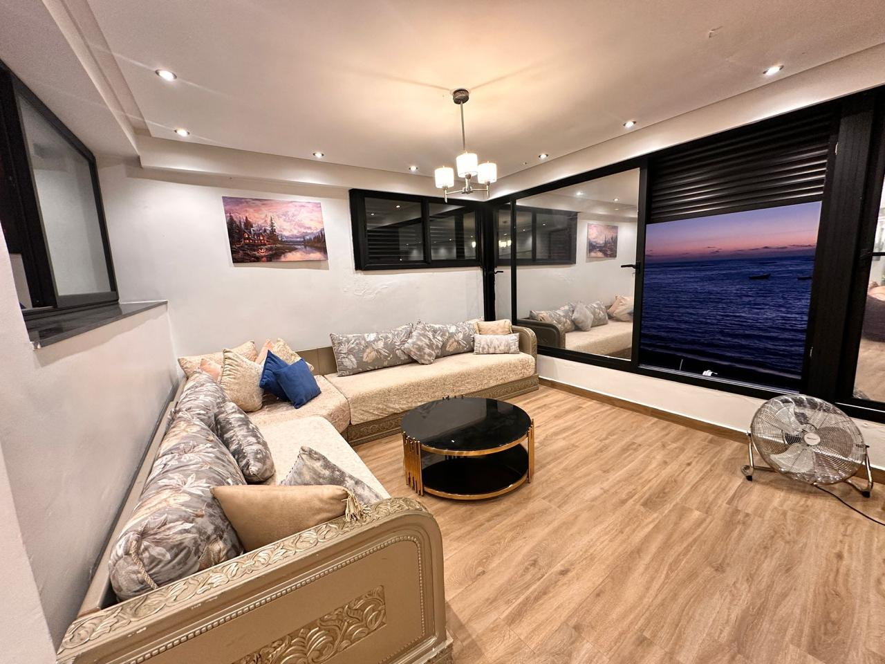
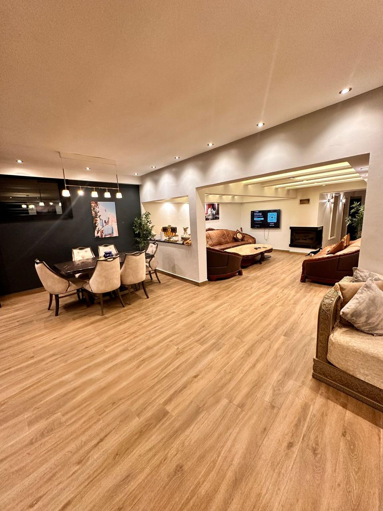
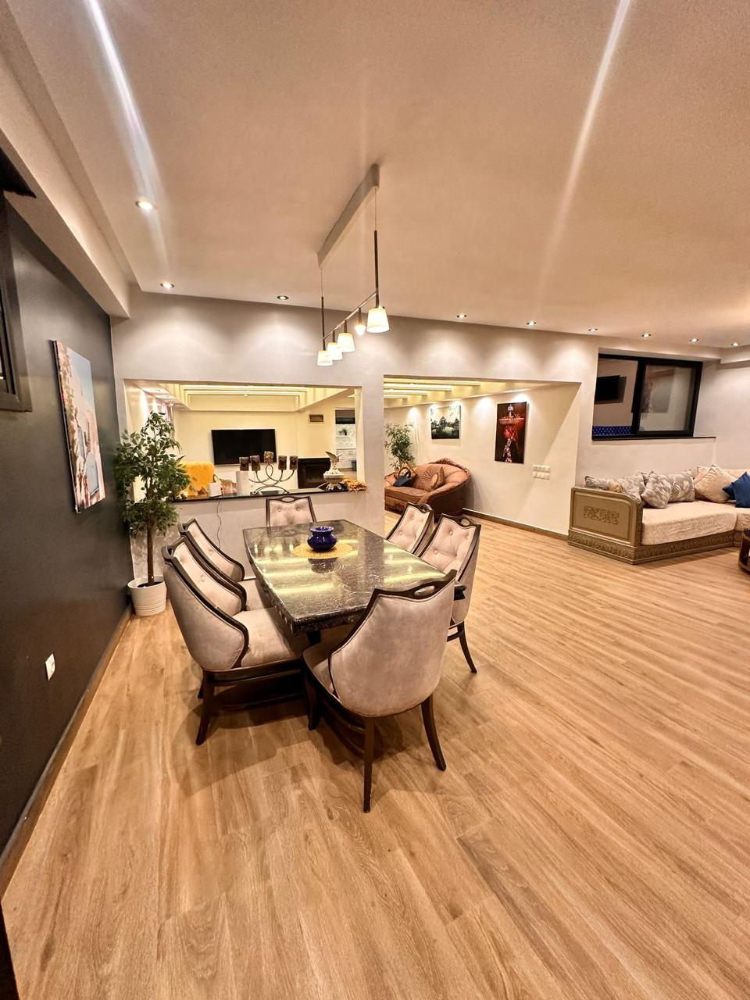
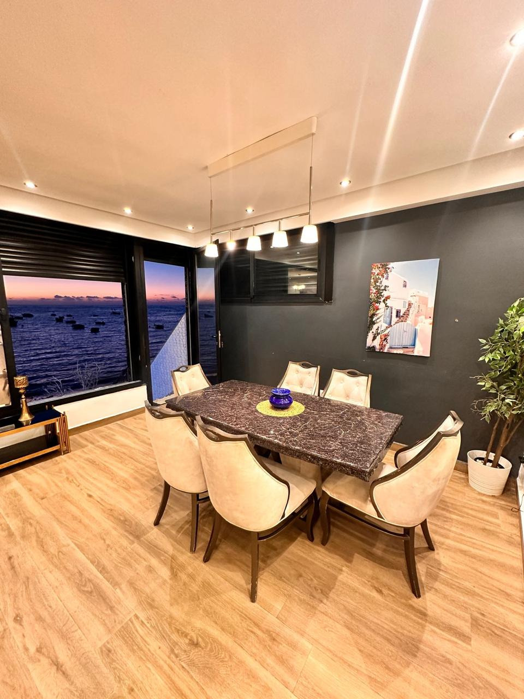
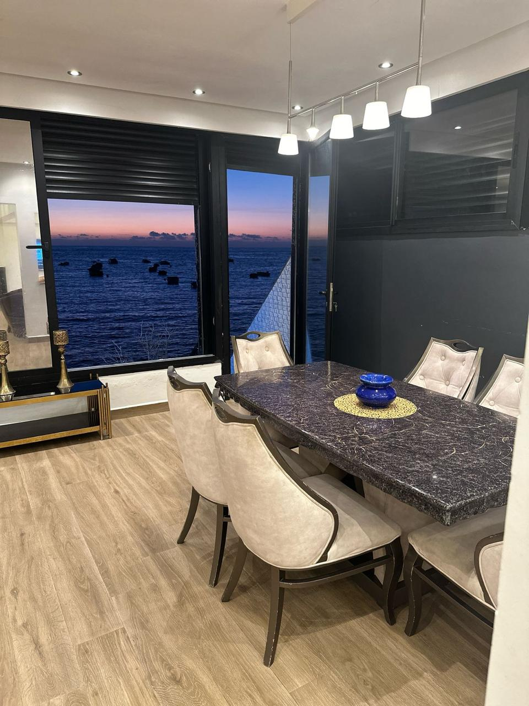
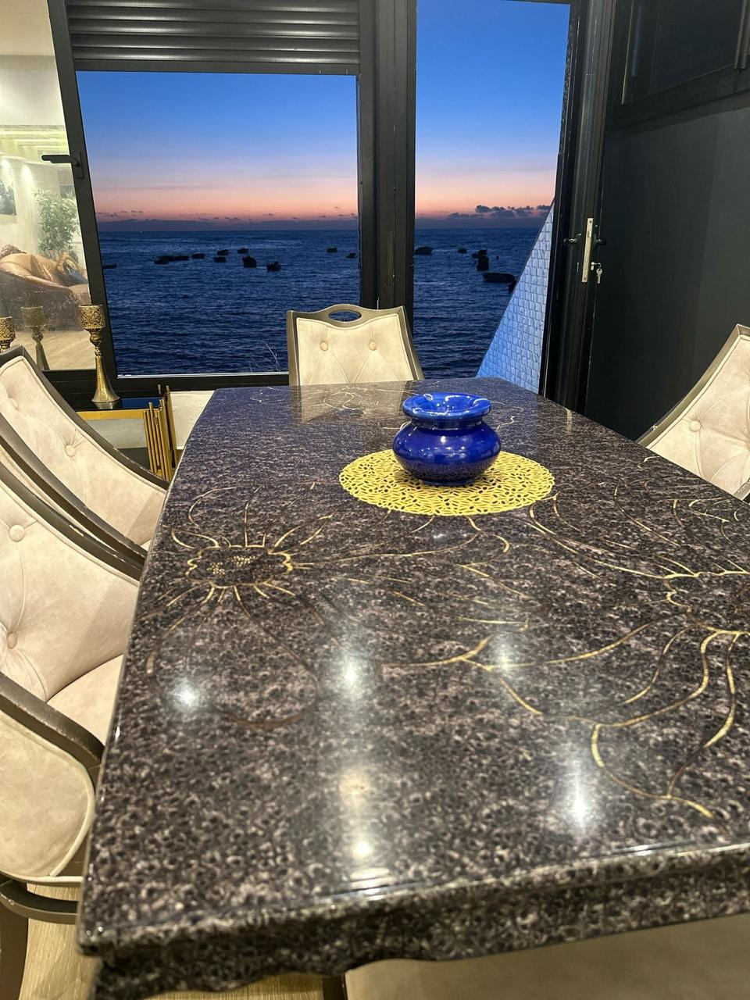
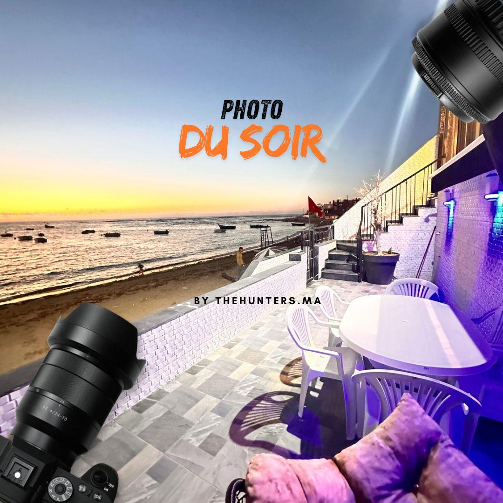
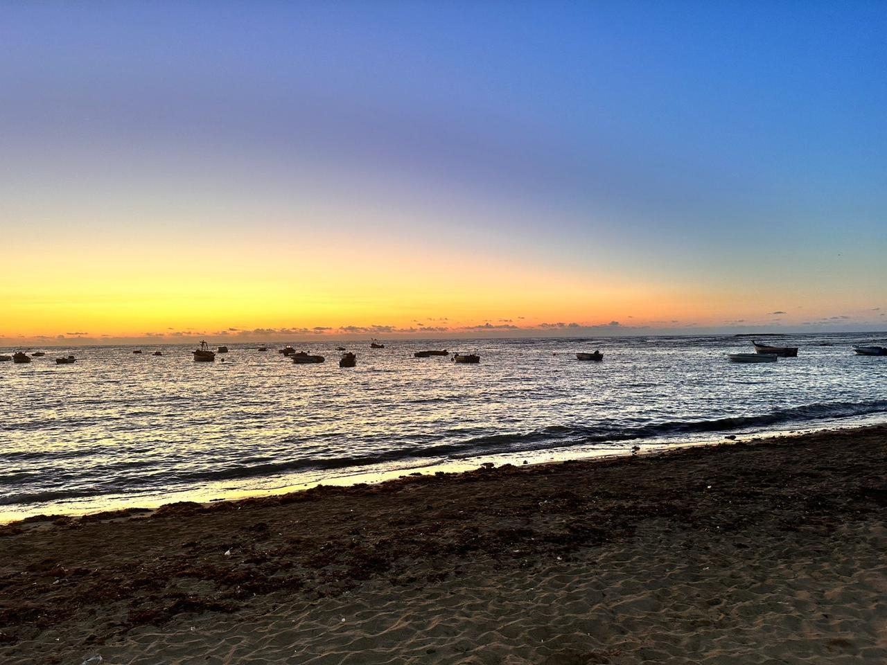
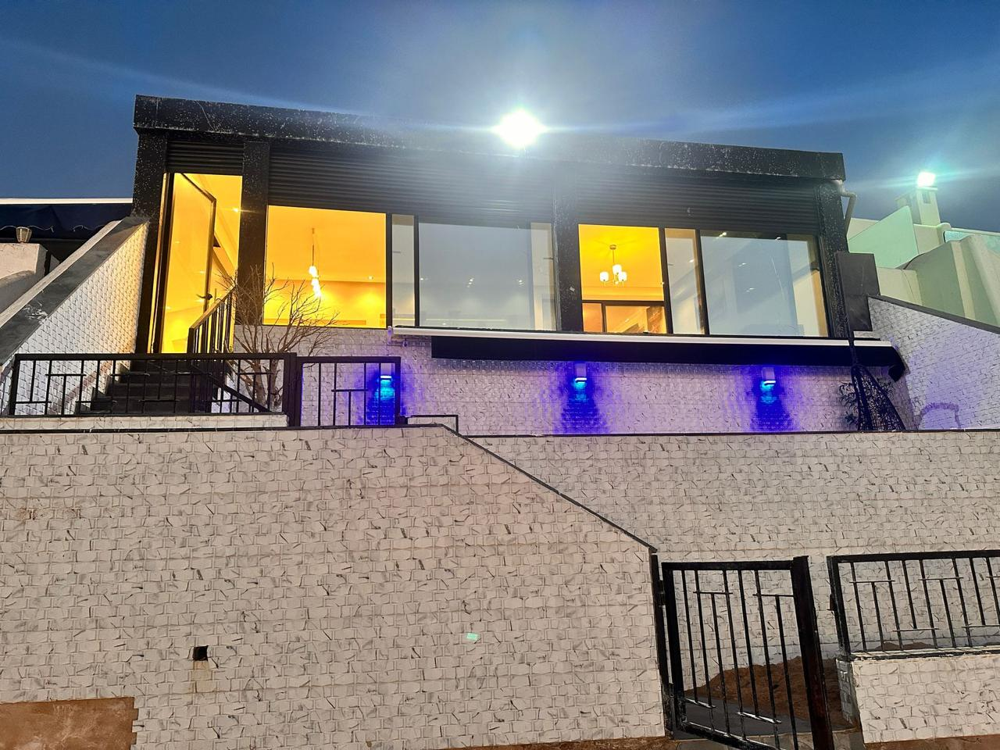

Villa Le Pêcheur
2 800 MAD/nuit
3 chambres • Front mer • Plave David










Description
Superbe villa en première ligne de mer située à Plage David, entre Mohammedia et Bouznika, offrant un cadre exceptionnel pour profiter pleinement de l’océan et du calme du littoral. La villa dispose d’un accès direct à la plage, idéal pour des journées de détente face à la mer. Elle se compose de 3 chambres, 2 salons confortables, 2 salles de bain, ainsi qu’une cuisine très bien équipée. Une terrasse permet de profiter de la vue et de l’air marin dans une atmosphère agréable. Un lieu parfait pour un séjour en famille ou entre amis, les pieds dans l’eau.
Caractéristiques
📍 Localisation : Plage David
🛏️ Chambres : 3
🛁 Salles de bain : 2
Contacter sur WhatsApp